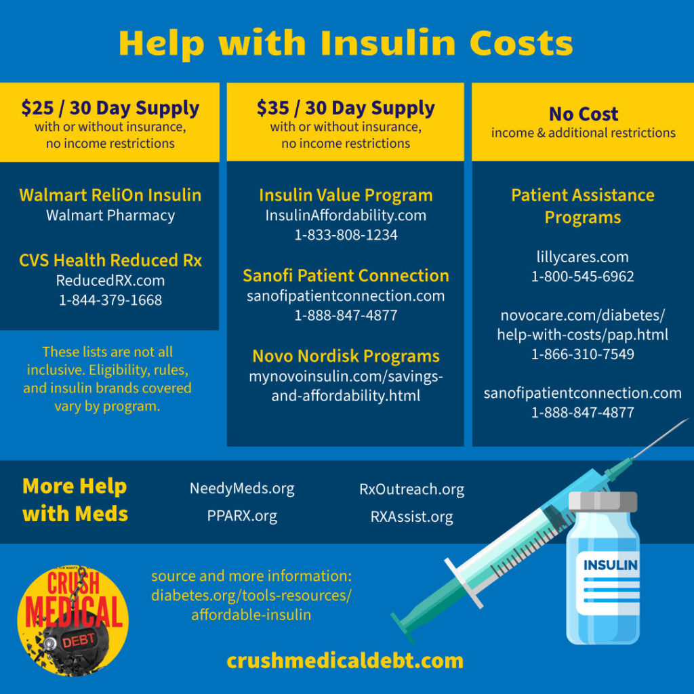
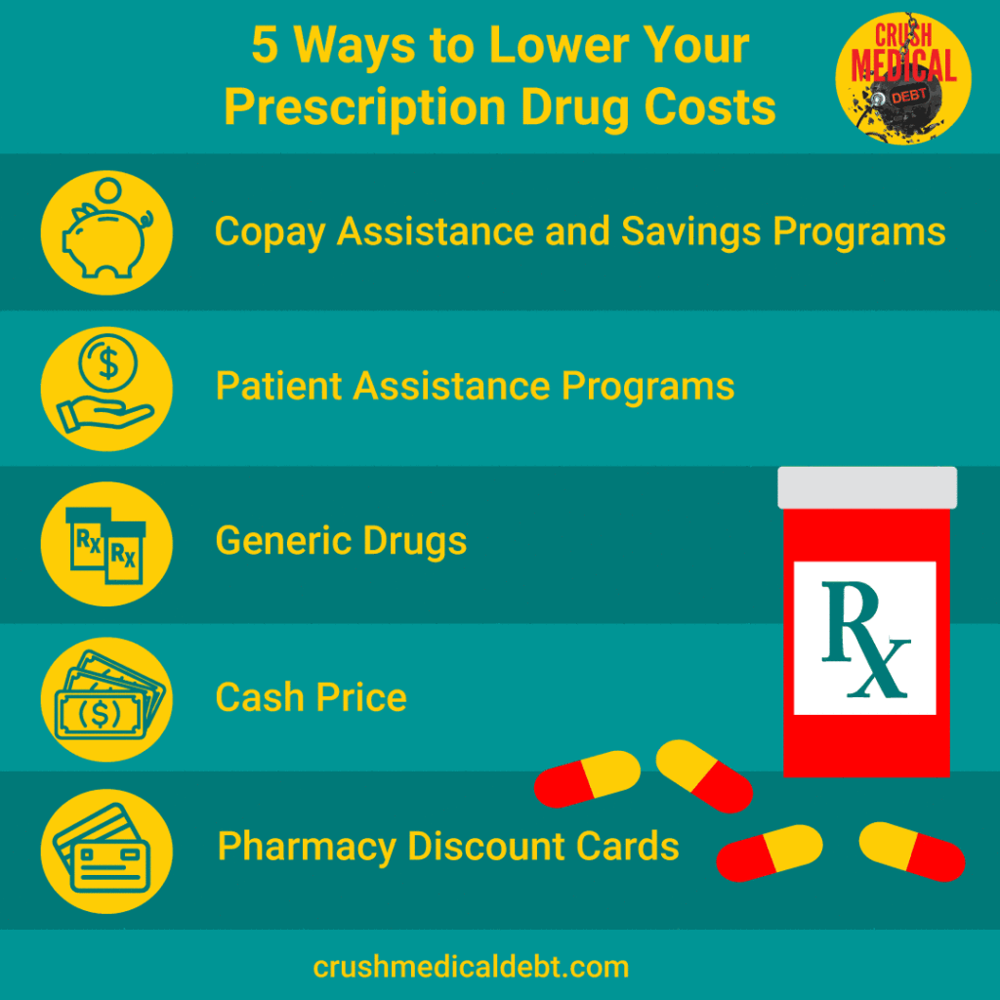

Diabetes is one of our country’s largest public health crises. 11.6% of Americans are living with the diagnosis. Untreated diabetes leads to blindness, stroke, kidney disease, heart disease, nerve damage, amputations – and of course – increased healthcare costs. But what if you can’t afford your insulin?
The High Cost of Diabetes
According to the American Diabetes Association (ADA), over 38 million Americans have diabetes. The costs are staggering, averaging $16,752 a year—more than twice the cost of health care for a person without diabetes.
In addition, 97.6 million American adults are living with a timebomb – prediabetes.
The High Cost of Insulin
Spending on insulin tripled between 2012 and 2022, leading many to ration their medicine or go without it altogether. By 2021, diabetes was the eighth leading cause of death in the U.S.
Whether it was the death count, public outcry, or the cost of treating the resulting health complications that finally broke the trend, some relief came in 2023.
Relief from Lawmakers
As part of President Biden’s Inflation Reduction Act, nearly four million diabetic seniors on Medicare saw their insulin costs capped at $35 per month.
Additionally, 25 states and the District of Columbia capped insulin copays for state-regulated commercial health insurance plans. Some states have also included this provision for state employee health plans and/or capped copays for other diabetes medications or supplies.
What’s Happening Now on Capitol Hill?
The Senate Bill 146 Cap Insulin Prices Act was introduced to Congress in 2023. Although it has not passed, it would cap insulin prices for those with Medicare and private commercial insurance at $25 per month. This would help many more people with the high costs of treating diabetes.
Relief from Drug Makers
The main three insulin manufacturers followed. They cut prices and created $35 out-of-pocket and cash-pay cost caps on some brands. They also expanded and created Patient Assistance Programs (PAPs) and other savings programs to help uninsured and underinsured Americans afford their diabetic medicines. Each program has its own eligibility criteria, application process, and covered insulin brands.
You can also use mat.org, a search engine for many patient assistance resources offered by the biopharmaceutical industry.

Income-Based Programs
Patient Assistance Programs (PAPs) provide insulin at no cost to people who meet income eligibility and other requirements.
- Lilly Cares Foundation Patient Assistance Program
lillycares.com 1-800-545-6962 - Sanofi Patient Connection Patient Assistance Program sanofipatientconnection.com 1-888-847-4877
- Novocare Patient Assistance Program 1‑866‑310‑7549
Programs Available Regardless of Income
Copay Assistance Programs and Savings Programs help eligible commercially insured and uninsured legal residents of any income limit their out-of-pocket costs to $35. Some savings offers can bring down costs even further!
- insulinaffordability.com 1-833-808-1234
- sanofipatientconnection.com lists savings programs, offers, and the PAP.
- mynovoinsulin.com lists savings programs, offers, and the PAP.
Look Into Generics
In addition to brand-name insulins, unbranded, and biosimilar insulins are available from pharmacies. These generics are typically less expensive than the brand names. These two listed are available for $25 a month.
- Walmart ReliOn Insulin at your Walmart Pharmacy
- CVS Health ReducedRX.com 1‑844‑379‑1668
Sometimes the Cash Price is Less
If you have insurance and prescription drug coverage, don’t automatically assume that gets you a lower price on your medications. Sometimes the cash price is less than your copay. Always inquire about the cash price.
Pharmacy Discount Cards
When looking for the best price, don’t ignore pharmacy discount cards. They’re available everywhere for free, don’t require insurance, and can often beat your copay. Download your free SingleCare card to shop for the lowest prescription drug prices.

Help from National Organizations and Nonprofits
Before lawmakers noticed the problem, national organizations, mostly nonprofits, were helping people afford their medications. In addition to drug discount programs that may help you find medicines for free or at a lower cost, many can help with other healthcare expenses.
- Copays.org provides help with copays.
- NeedyMeds.org lists programs that help pay for medicines and supplies. You can search by medicine or manufacturer name. You can also search for free to low-cost or sliding-scale clinics. 1-800-503-6897
- PPARX.org Partnership for Prescription Assistance helps people who don’t have prescription drug coverage find medicines and supplies for free or at low cost.
- RxAssist.org lists drug-company assistance programs, state programs, discount drug cards, copay help, and more.
- RxOutreach.org is a nonprofit, mail-order pharmacy that provides affordable medicine. 1-888-RX0-1234 (1-888-796-1234).
- Local health departments and clinics can help people with diabetes find medical care at little or no cost. FindaHealthCenter.hrsa.gov 1-877-464-4772
- BenefitsCheckUp.org helps seniors with limited incomes search for help with medicines, health care, rent, and other needs.
- 211.org is a national database of federal, local, national, and nonprofit medical and social services available in your area.
- The NIH’s Financial Help for Diabetes Care offers a comprehensive online resource guide.
- The American Diabetes Association has provided a comprehensive list of resources to help make insulin more affordable. diabetes.org/tools-resources/affordable-insulin
These lists are not all-inclusive. If you know of other great organizations helping patients afford life-saving medications, feel free to share with us at media@crushmedicaldebt.com
What Your Diabetes Doctor Wants You to Know
Dr. Virgie is joined by NYC endocrinologist Dr. Lisa G. Newman who shares the latest research, prevention, and treatment for Type 1 & Type 2 diabetes.
#DiabetesMonth #DiabetesAwareness